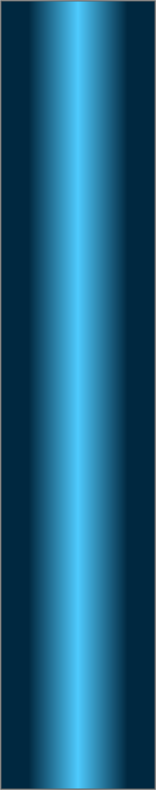
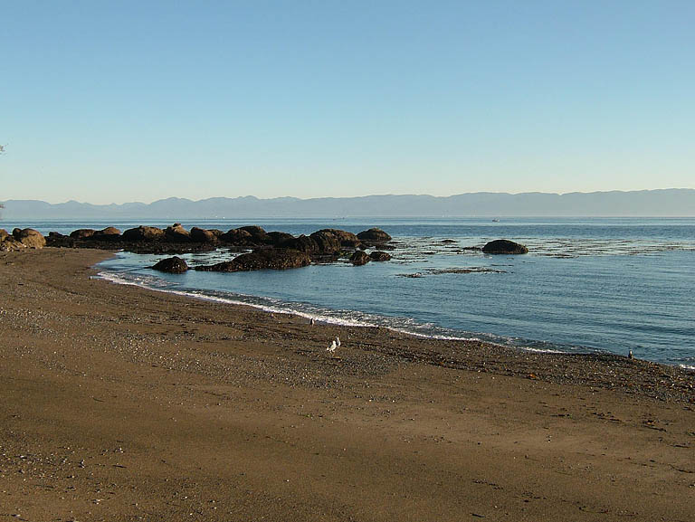
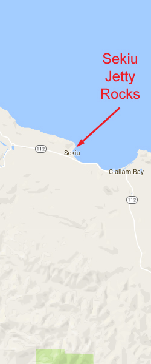
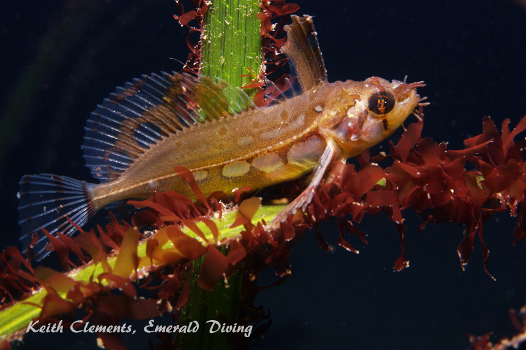
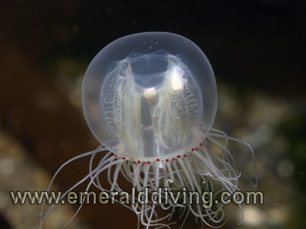
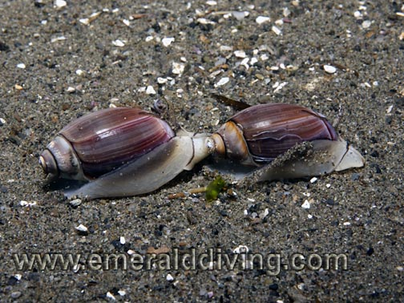
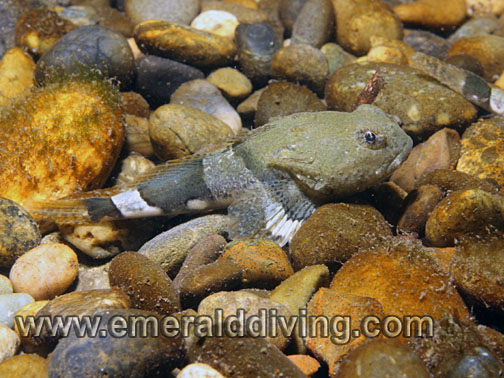
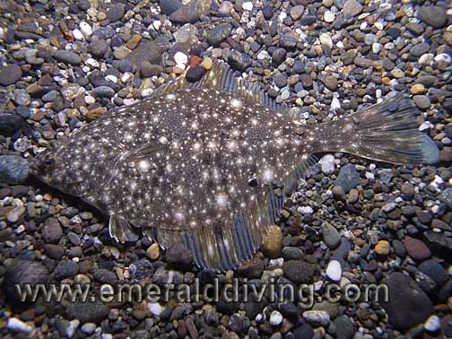
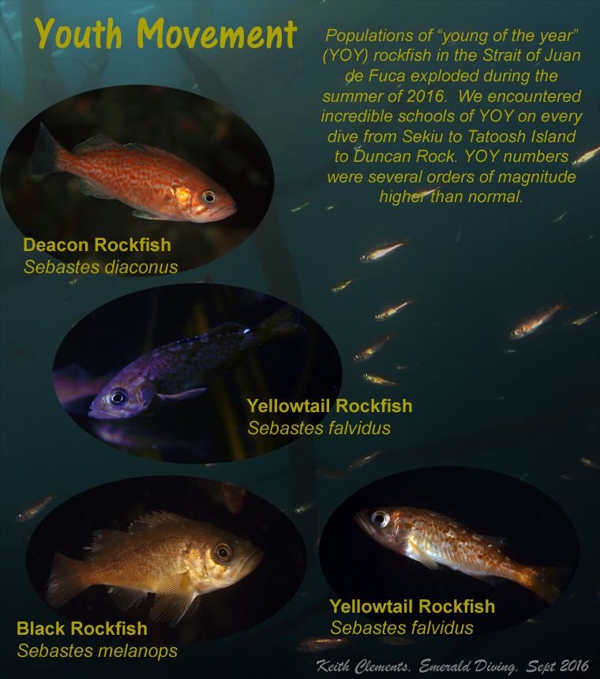

Double click to edit

Sekiu Jetty Rocks
Topography: Gently sloping gravel and sand substrate populated with expansive eelgrass beds, rock formations, and kelp forests.
Cape Flattery marine life rating: 4
Cape Flattery structure rating: 2
Diving depth: 30 feet
Skill level: Novice
Highlight: A chance to see species that aren’t normally seen elsewhere, such as silverspotted sculpins, sand lances, and red-eye jellyfish.
GPS coordinates: N48° 16.035’ W124° 17.903’
Access by boat: Sekiu is a small coastal town located about 18 miles east of Neah Bay. The town resides on the western shore of Clallam Bay. This dive site is located just west of the breakwater in front of Olson’s Resort in the far west part of town.
Shore access: Sekiu is located off highway 112 on the Olympic Peninsula. From highway 112, turn on to Front Street and follow the road down to the waterfront. The road quickly leads to Olson’s Resort, the rock breakwater, and the marina boat ramp. I park near the old crane
and concrete slab by the breakwater in the gravel parking area. A nice beach lies to the west. I enter the water to the west of the breakwater along this beach.
Dive profile: I dive this site in the evening or at night after a full day of diving at Cape Flattery. This is a fairly easy shore dive, although a good compass is a must in order to keep from getting disoriented.
This is a MUCH better dive when wind and swell are not present. Visibility often drops to 5-10 feet when the swell or wind waves or wind waves of any size pound the shore. In fact, I only dive this site when the water is dead calm - otherwise underwater photography is near impossible due to the visibility and swell.
The toughest part of this dive use to be climbing down the rock retaining wall that separates the parking lot from the beach in full scuba gear with a camera in hand. The retaining wall was recently modified to accommodate a steel ramp allowing easy access to the beach.
I take a compass bearing to the kelp bed west of the beach before beginning my dive. I then enter the water and follow my bearing. Swimming around the many rock formations and thick groves of kelp on the flat substrate makes it is easy to lose direction underwater. I cheat on night dives by looking to the surface and using the parking lot lights as a general indicator of the direction to shore.
The bottom is composed of gravel close to shore, but quickly gives way to an expansive stretch of sand and eel grass. The eelgrass then yields to kelp and rock formations. Sometimes the rock formations are so smothered in kelp that I have to dig through the kelp to find the invertebrates living on the rocks.
I rarely surpass 30 feet at this site as the substrate in this area is very gently sloped. Visibility is typically 20 to 30 feet during summer or early fall. The exception is when heavy swell is present and visibility drops to 10 feet or less.
My preferred gas mix: Air
Current observations: I have never noted any substantial current diving here, even off-slack. Keep in mind I only dive this area during times when tidal exchanges are minimal, so there could very well be substantial currents on severe exchanges. I also stay within the confines of the expansive kelp bed.
Boat Launch (although no boat is needed to dive here)
Sekiu boat launch next to Olson’s Resort (Sekiu). Approximately 200 yards from the dive site.
Facilities: None
Hazards:
Current: Current within the confines of the kelp bed is generally a non-factor. Potential for strong current exists outside the protection of the kelp.
Navigation: It is easy to lose direction underwater weaving through kelp and rocks on the flat substrate.
Fishermen: Fishermen occasionally cast for rockfish and salmon from the beach.
Snagging hazard: Kelp is thick and poses a potential entanglement hazard.
Swell: Swell is usually minimal to non-existent at this site. Moderate swell occasionally makes its way into this bay.
Marine life: This site offers some unique encounters with northwest marine life. This is one of the best sites to find red-eye jellyfish. The eelgrass beds are also a great place to find silverspotted sculpins and tubenose poachers, but finding them requires a keen eye and patience. I have seen giant Pacific octopus out in the open on the hunt out around the rocks. Harbor seals make sporadic appearances and occasionally socialize with divers.
I often encounter schools of sand lances in the shallows along the gravel section in front of the beach. These thin, silver fish dart from underneath the gravel as a diver approaches, then dart back into the gravel for protection. On another occasion, I was fortunate to dive amidst a massive school of relaxed herring in the kelp forest. My dive buddy and I also found a rockhead on one dive in 10 feet of water, however the swell was so bad I couldn’t get a picture of the rare little fish. However my strangest find at Sekiu was finding a freshly deceased 5' long lancetfish. These are deep water hunters that occasionally come to the shallows to die. They look like a combination of a barracuda and sailfish.
Small rockfish, occasional cabezon, greeling of various types, red Irish lords, stalked jellies, and starry flounder are all found in modest quantities. Moon snails patrol the sand flats along the eelgrass and kelp beds. Colorful anemones and nudibranchs hide under the canopy of kelp shrouding the rock formations. Huge urticinas, white spotted anemones, plumose anemones, and orange spotted nudibranchs are but a few of the species I expect to find at this site.
Cape Flattery marine life rating: 4
Cape Flattery structure rating: 2
Diving depth: 30 feet
Skill level: Novice
Highlight: A chance to see species that aren’t normally seen elsewhere, such as silverspotted sculpins, sand lances, and red-eye jellyfish.
GPS coordinates: N48° 16.035’ W124° 17.903’
Access by boat: Sekiu is a small coastal town located about 18 miles east of Neah Bay. The town resides on the western shore of Clallam Bay. This dive site is located just west of the breakwater in front of Olson’s Resort in the far west part of town.
Shore access: Sekiu is located off highway 112 on the Olympic Peninsula. From highway 112, turn on to Front Street and follow the road down to the waterfront. The road quickly leads to Olson’s Resort, the rock breakwater, and the marina boat ramp. I park near the old crane
and concrete slab by the breakwater in the gravel parking area. A nice beach lies to the west. I enter the water to the west of the breakwater along this beach.
Dive profile: I dive this site in the evening or at night after a full day of diving at Cape Flattery. This is a fairly easy shore dive, although a good compass is a must in order to keep from getting disoriented.
This is a MUCH better dive when wind and swell are not present. Visibility often drops to 5-10 feet when the swell or wind waves or wind waves of any size pound the shore. In fact, I only dive this site when the water is dead calm - otherwise underwater photography is near impossible due to the visibility and swell.
The toughest part of this dive use to be climbing down the rock retaining wall that separates the parking lot from the beach in full scuba gear with a camera in hand. The retaining wall was recently modified to accommodate a steel ramp allowing easy access to the beach.
I take a compass bearing to the kelp bed west of the beach before beginning my dive. I then enter the water and follow my bearing. Swimming around the many rock formations and thick groves of kelp on the flat substrate makes it is easy to lose direction underwater. I cheat on night dives by looking to the surface and using the parking lot lights as a general indicator of the direction to shore.
The bottom is composed of gravel close to shore, but quickly gives way to an expansive stretch of sand and eel grass. The eelgrass then yields to kelp and rock formations. Sometimes the rock formations are so smothered in kelp that I have to dig through the kelp to find the invertebrates living on the rocks.
I rarely surpass 30 feet at this site as the substrate in this area is very gently sloped. Visibility is typically 20 to 30 feet during summer or early fall. The exception is when heavy swell is present and visibility drops to 10 feet or less.
My preferred gas mix: Air
Current observations: I have never noted any substantial current diving here, even off-slack. Keep in mind I only dive this area during times when tidal exchanges are minimal, so there could very well be substantial currents on severe exchanges. I also stay within the confines of the expansive kelp bed.
Boat Launch (although no boat is needed to dive here)
Sekiu boat launch next to Olson’s Resort (Sekiu). Approximately 200 yards from the dive site.
Facilities: None
Hazards:
Current: Current within the confines of the kelp bed is generally a non-factor. Potential for strong current exists outside the protection of the kelp.
Navigation: It is easy to lose direction underwater weaving through kelp and rocks on the flat substrate.
Fishermen: Fishermen occasionally cast for rockfish and salmon from the beach.
Snagging hazard: Kelp is thick and poses a potential entanglement hazard.
Swell: Swell is usually minimal to non-existent at this site. Moderate swell occasionally makes its way into this bay.
Marine life: This site offers some unique encounters with northwest marine life. This is one of the best sites to find red-eye jellyfish. The eelgrass beds are also a great place to find silverspotted sculpins and tubenose poachers, but finding them requires a keen eye and patience. I have seen giant Pacific octopus out in the open on the hunt out around the rocks. Harbor seals make sporadic appearances and occasionally socialize with divers.
I often encounter schools of sand lances in the shallows along the gravel section in front of the beach. These thin, silver fish dart from underneath the gravel as a diver approaches, then dart back into the gravel for protection. On another occasion, I was fortunate to dive amidst a massive school of relaxed herring in the kelp forest. My dive buddy and I also found a rockhead on one dive in 10 feet of water, however the swell was so bad I couldn’t get a picture of the rare little fish. However my strangest find at Sekiu was finding a freshly deceased 5' long lancetfish. These are deep water hunters that occasionally come to the shallows to die. They look like a combination of a barracuda and sailfish.
Small rockfish, occasional cabezon, greeling of various types, red Irish lords, stalked jellies, and starry flounder are all found in modest quantities. Moon snails patrol the sand flats along the eelgrass and kelp beds. Colorful anemones and nudibranchs hide under the canopy of kelp shrouding the rock formations. Huge urticinas, white spotted anemones, plumose anemones, and orange spotted nudibranchs are but a few of the species I expect to find at this site.






Ssilverspotted Sculpin
Red-Eyed Jellyfish
Purple Olive Snails
Underwater imagery from this site

Ten-Tentacle Anemone

Unidentified Sculpin
Lion Nudibranch
Starry Flounder
Composite Photography From Sekiu
